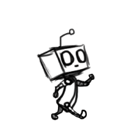

En este tema construiremos un ascensor inteligente.

Vamos a construir una araña con 4, 6 u 8 patas, según nos venga mejor.
Lo único que tiene que hacer nuestra araña es moverse en ambos sentidos.
A continuación, mostraremos un ejemplo de construcción de una araña base. Nosostros hemos elegido la forma
más sencilla, una arala de 4 patas.
Empezaremos por montar el eje del motor que dará movimiento a la araña.

Ahora montamos una parte de la estructura que sujetará las patas.


También montamos la otra parte de la estructura para sujetar las patas del otro lado.


Montaremos las patas de uno de los lados.


Y se las añadimos a la estructura.


Hacemos lo mismo con las patas del otro lado.


Y también se las añadimos a la estructura.

Con esto, tendríamos terminada la araña.

Le añadimos el cableado y nos debería de quedar un montaje de este estilo.

En este caso no lo programaremos sino que utilizaremos la aplicación Comander para manejar nuestra araña.
Nuestro proyecto terminado funcionaría de la siguiente forma.